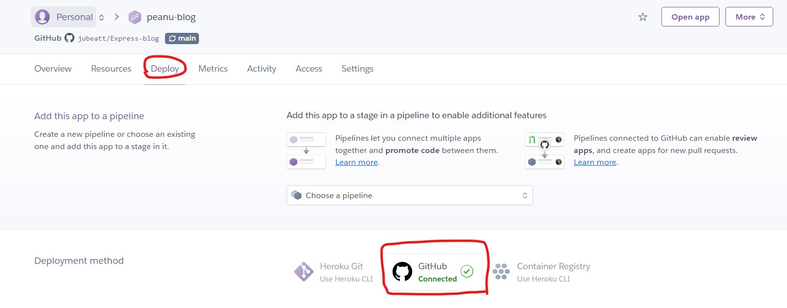
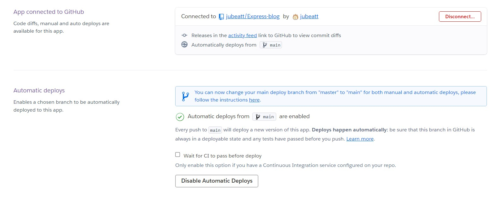

隨手紀錄。
簡述
有一件事得先說清楚，通常會有兩種情境：
- 我已經在 GitHub 有 Repository，接著想部屬 AND 同步到 Heroku
- 我已經部屬到 Heroku 上，接著想在 GitHub 上開一個 Repository 來同步
這邊要講的是第二種，如果是第一種可以參考 這篇。
流程
1. 到 GitHub 上開一個新的 Reopsitory
2. 在本地端設定一個新的 remote 指向 GitHub
1 | git remote add origin <repository_url> |
3. push 到 GitHub 上
1 | git push origin main |
4. 到 Heroku 上設定 Deploy

我懶得重弄所以這是完成後的圖，但總之它會要你先登入，再來是選擇 Repository，就照著做就好，應該不會有什麼問題。
5. 設定自動部署
第四步做完後往下滑，就會看到「Automatic deploys」的選項：

這邊可以設定分支，但我不確定是不是真的能改，總之怕麻煩的話建議用 main 就好了。
最後按下「Enable Automatic Deploys」就可以了。
這樣就完成啦，之後每當 GitHub 的 main 分支一有變動 Heroku 就會自動幫你重新部署。